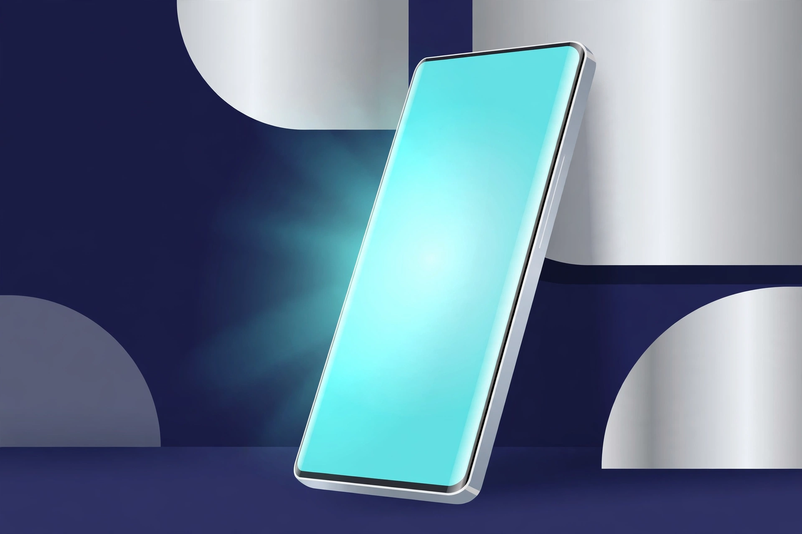

2026년 11월 24일

화웨이가 20일 새 서브 브랜드 'OSTA(싱망)'를 선보이고, 첫 제품 'OSTA O1 Pro'를 공개했습니다. AI를 위한 폰이라는 게 핵심입니다.
잠금을 풀면 바로 '샤오이 AI 화면'이 뜹니다. 자주 쓰는 앱과 필요한 정보가 한 화면에 모입니다. 앱을 찾아 여는 대신, AI가 먼저 필요한 걸 보여주는 방식입니다.
화면부터 다릅니다. 6.39인치에 가로가 넓은 16:9.5 비율입니다. 테두리는 1.05mm로 얇고 화면 비율은 96.1%입니다. 영상이나 표를 볼 때 가로 시야가 일반 폰보다 28% 넓습니다.
화웨이는 OSTA를 '선봉 AI 기술 실험장'이라고 설명했습니다. 당분간 판매량 목표는 두지 않고, 아직 다듬어지지 않은 새 기술부터 먼저 시도하겠다는 얘기입니다. 아직 중국 시장 얘기라, 한국 출시 여부는 알려지지 않았습니다.
출처: 산둥재경망 — 화웨이, 서브 브랜드 싱망 첫 AI폰 발표 · 연합보 — 화웨이 첫 AI폰, 3만 위안 안쪽 가격